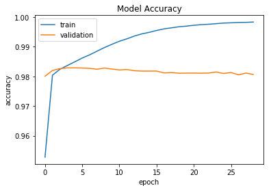
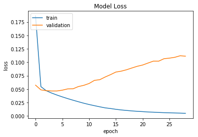

Python 3.6.1 |Anaconda 4.4.0 (x86_64)| (default, May 11 2017, 13:04:09)
Type "copyright", "credits" or "license" for more information.
IPython 5.3.0 -- An enhanced Interactive Python.
? -> Introduction and overview of IPython's features.
%quickref -> Quick reference.
help -> Python's own help system.
object? -> Details about 'object', use 'object??' for extra details.
In [1]: runfile('/Users/apple/Desktop/Thesis/3/code/Self work/CNN.py', wdir='/Users/apple/Desktop/Thesis/3/code/Self work')
/Users/apple/anaconda/lib/python3.6/site-packages/h5py/__init__.py:34: FutureWarning: Conversion of the second argument of issubdtype from `float` to `np.floating` is deprecated. In future, it will be treated as `np.float64 == np.dtype(float).type`.
from ._conv import register_converters as _register_converters
Using TensorFlow backend.
WARNING:tensorflow:From /Users/apple/anaconda/lib/python3.6/site-packages/tensorflow/python/util/deprecation.py:497: calling conv1d (from tensorflow.python.ops.nn_ops) with data_format=NHWC is deprecated and will be removed in a future version.
Instructions for updating:
`NHWC` for data_format is deprecated, use `NWC` instead
Train on 143613 samples, validate on 15958 samples
Epoch 1/50
143613/143613 [==============================] - 277s 2ms/step - loss: 0.1864 - acc: 0.9528 - val_loss: 0.0574 - val_acc: 0.9801
Epoch 00001: val_loss improved from inf to 0.05741, saving model to weights_base.best.hdf5
Epoch 2/50
143613/143613 [==============================] - 271s 2ms/step - loss: 0.0547 - acc: 0.9804 - val_loss: 0.0486 - val_acc: 0.9820
Epoch 00002: val_loss improved from 0.05741 to 0.04864, saving model to weights_base.best.hdf5
Epoch 3/50
143613/143613 [==============================] - 270s 2ms/step - loss: 0.0471 - acc: 0.9824 - val_loss: 0.0472 - val_acc: 0.9826
Epoch 00003: val_loss improved from 0.04864 to 0.04717, saving model to weights_base.best.hdf5
Epoch 4/50
143613/143613 [==============================] - 269s 2ms/step - loss: 0.0427 - acc: 0.9837 - val_loss: 0.0466 - val_acc: 0.9829
Epoch 00004: val_loss improved from 0.04717 to 0.04659, saving model to weights_base.best.hdf5
Epoch 5/50
143613/143613 [==============================] - 265s 2ms/step - loss: 0.0390 - acc: 0.9849 - val_loss: 0.0466 - val_acc: 0.9829
Epoch 00005: val_loss did not improve from 0.04659
Epoch 6/50
143613/143613 [==============================] - 264s 2ms/step - loss: 0.0356 - acc: 0.9862 - val_loss: 0.0481 - val_acc: 0.9828
Epoch 00006: val_loss did not improve from 0.04659
Epoch 7/50
143613/143613 [==============================] - 265s 2ms/step - loss: 0.0324 - acc: 0.9873 - val_loss: 0.0504 - val_acc: 0.9827
Epoch 00007: val_loss did not improve from 0.04659
Epoch 8/50
143613/143613 [==============================] - 264s 2ms/step - loss: 0.0294 - acc: 0.9885 - val_loss: 0.0506 - val_acc: 0.9824
Epoch 00008: val_loss did not improve from 0.04659
Epoch 9/50
143613/143613 [==============================] - 264s 2ms/step - loss: 0.0266 - acc: 0.9898 - val_loss: 0.0548 - val_acc: 0.9828
Epoch 00009: val_loss did not improve from 0.04659
Epoch 10/50
143613/143613 [==============================] - 264s 2ms/step - loss: 0.0238 - acc: 0.9908 - val_loss: 0.0570 - val_acc: 0.9825
Epoch 00010: val_loss did not improve from 0.04659
Epoch 11/50
143613/143613 [==============================] - 264s 2ms/step - loss: 0.0214 - acc: 0.9919 - val_loss: 0.0605 - val_acc: 0.9822
Epoch 00011: val_loss did not improve from 0.04659
Epoch 12/50
143613/143613 [==============================] - 264s 2ms/step - loss: 0.0192 - acc: 0.9927 - val_loss: 0.0663 - val_acc: 0.9823
Epoch 00012: val_loss did not improve from 0.04659
Epoch 13/50
143613/143613 [==============================] - 264s 2ms/step - loss: 0.0171 - acc: 0.9936 - val_loss: 0.0676 - val_acc: 0.9819
Epoch 00013: val_loss did not improve from 0.04659
Epoch 14/50
143613/143613 [==============================] - 265s 2ms/step - loss: 0.0151 - acc: 0.9943 - val_loss: 0.0726 - val_acc: 0.9818
Epoch 00014: val_loss did not improve from 0.04659
Epoch 15/50
143613/143613 [==============================] - 264s 2ms/step - loss: 0.0139 - acc: 0.9949 - val_loss: 0.0770 - val_acc: 0.9818
Epoch 00015: val_loss did not improve from 0.04659
Epoch 16/50
143613/143613 [==============================] - 265s 2ms/step - loss: 0.0125 - acc: 0.9955 - val_loss: 0.0818 - val_acc: 0.9818
Epoch 00016: val_loss did not improve from 0.04659
Epoch 17/50
143613/143613 [==============================] - 264s 2ms/step - loss: 0.0113 - acc: 0.9960 - val_loss: 0.0835 - val_acc: 0.9812
Epoch 00017: val_loss did not improve from 0.04659
Epoch 18/50
143613/143613 [==============================] - 264s 2ms/step - loss: 0.0103 - acc: 0.9964 - val_loss: 0.0861 - val_acc: 0.9813
Epoch 00018: val_loss did not improve from 0.04659
Epoch 19/50
143613/143613 [==============================] - 264s 2ms/step - loss: 0.0094 - acc: 0.9967 - val_loss: 0.0894 - val_acc: 0.9811
Epoch 00019: val_loss did not improve from 0.04659
Epoch 20/50
143613/143613 [==============================] - 264s 2ms/step - loss: 0.0087 - acc: 0.9970 - val_loss: 0.0925 - val_acc: 0.9811
Epoch 00020: val_loss did not improve from 0.04659
Epoch 21/50
143613/143613 [==============================] - 264s 2ms/step - loss: 0.0082 - acc: 0.9972 - val_loss: 0.0949 - val_acc: 0.9811
Epoch 00021: val_loss did not improve from 0.04659
Epoch 22/50
143613/143613 [==============================] - 271s 2ms/step - loss: 0.0074 - acc: 0.9975 - val_loss: 0.0986 - val_acc: 0.9811
Epoch 00022: val_loss did not improve from 0.04659
Epoch 23/50
143613/143613 [==============================] - 272s 2ms/step - loss: 0.0071 - acc: 0.9976 - val_loss: 0.1021 - val_acc: 0.9811
Epoch 00023: val_loss did not improve from 0.04659
Epoch 24/50
143613/143613 [==============================] - 268s 2ms/step - loss: 0.0066 - acc: 0.9978 - val_loss: 0.1021 - val_acc: 0.9815
Epoch 00024: val_loss did not improve from 0.04659
Epoch 25/50
143613/143613 [==============================] - 268s 2ms/step - loss: 0.0062 - acc: 0.9980 - val_loss: 0.1067 - val_acc: 0.9810
Epoch 00025: val_loss did not improve from 0.04659
Epoch 26/50
143613/143613 [==============================] - 267s 2ms/step - loss: 0.0060 - acc: 0.9981 - val_loss: 0.1077 - val_acc: 0.9813
Epoch 00026: val_loss did not improve from 0.04659
Epoch 27/50
143613/143613 [==============================] - 268s 2ms/step - loss: 0.0056 - acc: 0.9982 - val_loss: 0.1093 - val_acc: 0.9805
Epoch 00027: val_loss did not improve from 0.04659
Epoch 28/50
143613/143613 [==============================] - 272s 2ms/step - loss: 0.0054 - acc: 0.9982 - val_loss: 0.1121 - val_acc: 0.9811
Epoch 00028: val_loss did not improve from 0.04659
Epoch 29/50
143613/143613 [==============================] - 270s 2ms/step - loss: 0.0050 - acc: 0.9983 - val_loss: 0.1114 - val_acc: 0.9807
Epoch 00029: val_loss did not improve from 0.04659
_________________________________________________________________
Layer (type) Output Shape Param #
=================================================================
input_1 (InputLayer) (None, 400) 0
_________________________________________________________________
embedding_1 (Embedding) (None, 400, 128) 24539136
_________________________________________________________________
conv1d_1 (Conv1D) (None, 400, 100) 51300
_________________________________________________________________
max_pooling1d_1 (MaxPooling1 (None, 100, 100) 0
_________________________________________________________________
global_max_pooling1d_1 (Glob (None, 100) 0
_________________________________________________________________
dropout_1 (Dropout) (None, 100) 0
_________________________________________________________________
dense_1 (Dense) (None, 50) 5050
_________________________________________________________________
dropout_2 (Dropout) (None, 50) 0
_________________________________________________________________
dense_2 (Dense) (None, 6) 306
=================================================================
Total params: 24,595,792
Trainable params: 24,595,792
Non-trainable params: 0
_________________________________________________________________


CNN Accuracy: 98.07%
153164/153164 [==============================] - 89s 578us/step
In [2]: